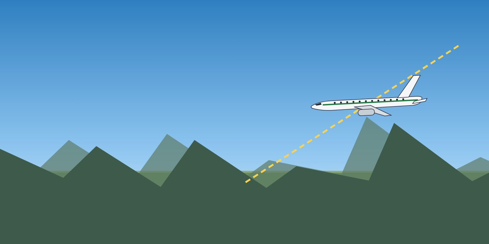

Apply stabilised approach criteria and the go-around policy.
Fly non-precision approaches with the CDFA technique.
Use the autoflight system to reduce CFIT risk.

CDFA: one constant angle to the runway.
Standard operating procedures
Do not invent your own procedures. Follow the company SOPs.
Before the approach, know which approach and runway aids are available (NOTAMs, ATIS, pilot reports) and use all of them.
Understand the approach, missed approach and departure procedures, and comply with them.
Stabilised approach
Fly stabilised approaches. If the aircraft is not stabilised by 1,000 ft above aerodrome elevation in IMC or 500 ft in VMC (or the gates in your Operations Manual), go around. Domestic Airlines applies a no-fault go-around policy.
Continuous descent final approach (CDFA)
Continuous descent final approach (CDFA, also called CANPA) keeps the aircraft stabilised on a constant path. EASA requires CDFA for non-precision approaches unless otherwise approved (CAT.OP.MPA.115).
EASA requires non-precision approaches to be flown with the CDFA technique unless otherwise approved (CAT.OP.MPA.115). The company presentations also call it CANPA (constant angle non-precision approach).
The aircraft descends on a constant angle — typically about 3° — from the final approach fix to the runway, without levelling off at the MDA.
At the decision point (DA/H or MDA/H with the add-on defined by the company), if the required visual references are not in sight, go around.
Where available and trained, use the autoflight system — for example LNAV/VNAV or FPA modes — to fly the constant angle.
Automation
Use automation appropriately to reduce workload and to fly stabilised approaches.
Understand the autopilot modes. Monitor the FMA, and intervene manually if the aircraft does not do what is intended.
Avoid excessive descent rates and low or high speeds at low altitude.
Key takeaways
Not stabilised by 1,000 ft IMC / 500 ft VMC (or company gates): go around.
Non-precision approaches: CDFA (CANPA) — constant angle, no levelling at MDA.
Know the autopilot modes; monitor the FMA; intervene if needed.
Knowledge check
What is the main CFIT benefit of the CDFA technique?
It saves fuel
It avoids early step-downs and level flight close to terrain, keeping the approach stabilised
It allows descent below the MDA
It removes the need for a missed approach
Answer: B. CDFA flies a constant angle like an ILS, avoiding the dive-and-drive profile that brings the aircraft low and level near terrain.
Training material only. It does not replace the Aircraft Flight Manual, FCOM, QRH, MEL or the Domestic Airlines Operations Manual, which always take precedence.